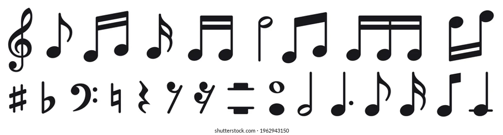
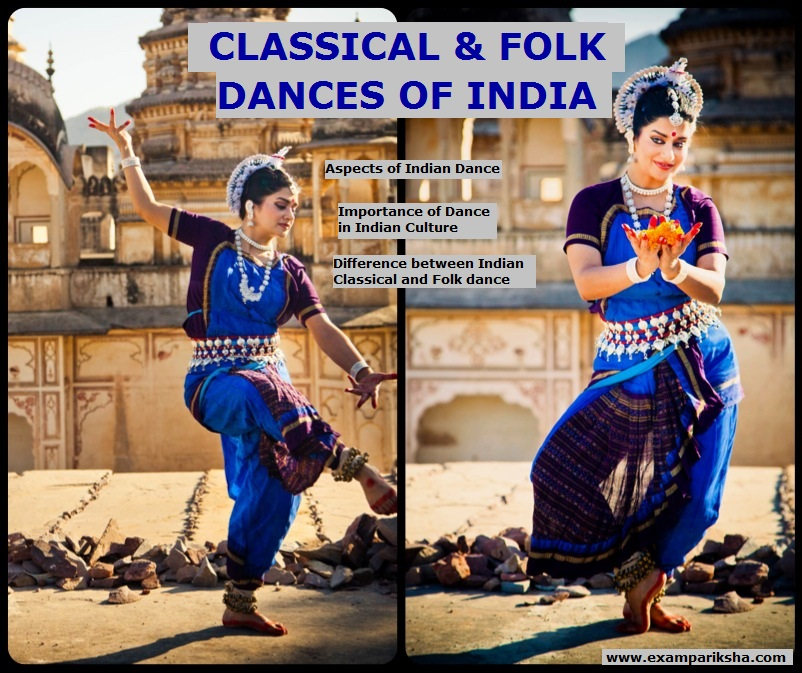
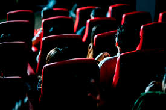
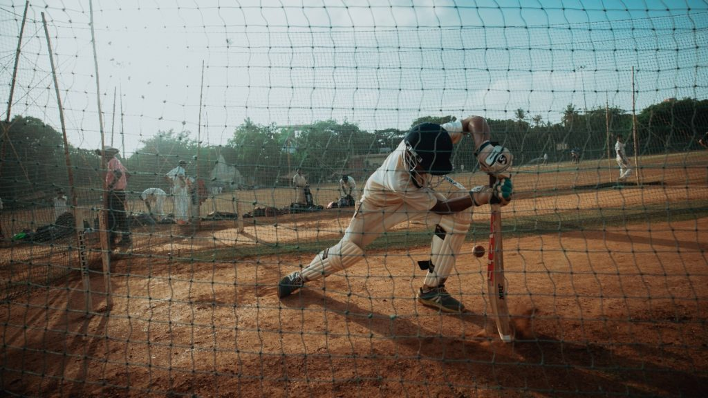

Music is a pleasant sound which is a combination of melodies and harmony and which soothes you. Music may also refer to the art of composing such pleasant sounds with the help of the various musical instruments. A person who knows music is a Musician. The music consists of Sargam, Ragas, Taals, etc. Music is not only what is composed of men but also which exists in nature. Have you ever heard the sound of a waterfall or a flowing river? Could you hear music there? Thus, everything in harmony has music. Here, I would like to quote a line by Wolfgang Amadeus Mozart, one of the greatest musicians, “The music is not in the notes, but in the silence between.” Music has great qualities of healing a person emotionally and mentally. Music is a form of meditation. While composing or listening music ones tends to forget all his worries, sorrows and pains. But, in order to appreciate good music, we need to cultivate our musical taste. It can be cited that in the Dwapar Yug, the Gopis would get mesmerized with the music that flowed from Lord Krishna’s flute. They would surrender themselves to Him. Also, the research has proved that the plants which hear the Music grow at a faster rate in comparison to the others.
Dance is also called the hidden language of the soul as we use it to express ourselves when words fall short. The joy which comes with dancing helps us get over our sorrow and adversity sometimes. Moreover, it is simply a translator for our hearts. What is most important to remember is that dance is not supposed to be perfect. There is no right way of dancing, as long as your heart is happy, you can dance. When we talk about dance, usually a professional dancer comes to our mind. But, this is where we go wrong. Dance is for anybody and everybody from a ballet dancer to the uncle dancing at a wedding. It is what unites us and helps us come together to celebrate joy and express our feelings. Therefore, we must all dance without worrying if we are doing it right or not. It is essential to understand that when you let go of yourself in dance, you truly enjoy it only then. All in all, dance is something which anyone can do. There is no right way or wrong way to dance, there is just a dance. The only hard part is taking the first step, after that, everything becomes easier. So, we must always dance our heart out and let our body move to the rhythm of music freely
Cinema has a lot of advantages if we look at the positive side. It is said to be a reflection of the society only. So, it helps us come face to face with the actuality of what’s happening in our society. It portrays things as they are and helps in opening our eyes to issues we may have well ignored in the past. Similarly, it helps people socialize better. It connects people and helps break the ice. People often discuss cinema to start a conversation or more. Moreover, it is also very interesting to talk about rather than politics and sports which is often divided. Above all, it also enhances the imagination powers of people. Cinema is a way of showing the world from the perspective of the director, thus it inspires other people too to broaden their thinking and imagination. Most importantly, cinema brings to us different cultures of the world. It introduces us to various art forms and helps us in gaining knowledge about how different people lead their lives. In a way, it brings us closer and makes us more accepting of different art forms and cultures. Cinema also teaches us a thing or two about practical life. Incidents are shown in movies of emergencies like robbery, fire, kidnapping and more help us learn things which we can apply in real life to save ourselves. Thus, it makes us more aware and teaches us to improvise.
Sports is such an activity that it can be taken up by anyone; at any age and any point in life. Adults, children and elders – everyone alike can take part in sports. Many regard sports as a mere co-curricular or extra-curricular activity in schools. However, in reality, sports play an equally important role as does education in a person’s life. To achieve overall and all-round development in life, one should be well-versed in both sports and culture. While training sharpens the mind, sports sharpens the body and fitness. Thus, both are essential. There are numerous advantages of involving oneself in sports. First and foremost, as known by all and very definitively, competitions increase the physical fitness of an individual. Additionally, sports also contribute to building stable mental well-being of a person. Various researchers show that people who are in the daily practice of sports in any form record better mental as well as physical health. Moreover, sports also eliminates the risk of a person catching diseases or facing any bodily interruptions. Competitions increase immunity and increase people’s stamina.
